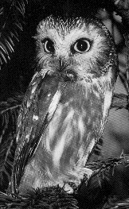
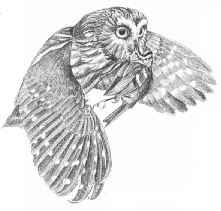

<html>

<head>

<title>The Annotated Unbroken Chain</title>

</head>

<body>

<i>"Listenin' for the secret, searchin' for the sound..."</i>



<h2>The <i>Annotated</i> "Unbroken Chain"</h2>

An installment in <a href="gdhome.html"> The

<i>Annotated</i> Grateful Dead Lyrics.</a><br>

By <a href="david.html">David Dodd</a><br>

Library, University of Colorado at Colorado Springs

<hr>

<a href="copyrigh.html">Copyright notice</a>

<hr>

<a href="#title"><b>"Unbroken Chain"</b></a><br>

Words by <a href="petersen.html">Robert M. Petersen</a>; music by Phil Lesh<br>

<ul>

<li><a href="#chain">unbroken chain</a>

<li><a href="#loss">drop you for a loss</a>

<li><a href="#owl">Song of the saw-whet owl</a>

</ul>

<hr>

<a name="title"><h3>"Unbroken Chain"</h3></a>

Recorded on <A HREF="discog1.html#mars"><cite>Mars Hotel</cite></a>.

<p>

First live performance on March 19, 1995, at the Spectrum in Philadelphia. First 

set closer.

<p>

This report just in: (Reprinted with permission of the author)<br>

<blockquote>



From chill@omni.voicenet.com<br>

Date: Mon, 20 MAR 1995 07:22:18 -0500<br> 

From: Craig Hillwig <chill@omni.voicenet.com><br>

<a href="http://www.voicenet.com/voicenet/homepages/chill/index.html">World Wide Web: http://www.voicenet.com/voicenet/homepages/chill/index.html</a>

Subject: Unbroken Chain - How it went down<br> 

                                              <p>

I thought I'd try to fill you in on how the UC went down.  NOT trying to

rub it in or anything.  I don't usualy review shows because I find it's

subjective.  But for those who missed it:

<p>

[Some stuff deleted...]                                                 

                                                 <p>

Don't Ease was also a surprise -- 5th song into the set at about 0:35 into

it.  I thought, "Man!!  Short set. I'll be pissed if they walk off the

stage after this."

                                                    <p>

The band stayed on the stage with the lights down after the Don't Ease,

and then we knew that SOMETHING was going to happen.  All of the band

members were looking at each other somewhat anxiously.

                                                      <p>

Then the opening chords started wafting through quietly, a nervousness

and heightened sense of urgency started rushing through the crowd. 

Isolated shouts of "Unbroken Chain!" could be heard, and then everyone

looked at each other as if, "Can it be?"  The cheers became louder,

swelling as more and more heads realized what was happening, and by the

time the first verse rolled around, the place was going absolutely nuts --

bolts of energy flying through the Spectrum.

<p>

Band pulls out of the intro, and all four (non-drummers) step up to the

mikes, "Blue light rain"  Phil with the spotlight, "whoa unbroken chain . .

. ."  Devastating -- people just screaming their heads off for about 6

seconds, until, almost simultaneously, everyone decided to quiet down and

listen.

<p>

The jamming part of the song was the highlight, with Jerry all over the

fretboard.  

<p>

Put it this way.  It certainly could have been played better, and it will

get better with some playing.  But you always remember your first.

<p>

Of course, the band left the stage to an extended standing ovation.  When

the house lights went up, everyone sorta looked at each other and then, in

a moment of mutual recognition, the whole placed erupted again, lotsa

cheering, hugging.

<p>

When the band came out for the second set, Phil did a sweeping bow, and of

course, the place erupted once again.

<p>

Well, that kinda captures it, I think.

</blockquote>>

<hr>

<a name="chain"><h3>unbroken chain</h3></a>

The concept of an "unbroken chain" usually applies to the theory of transmission

of authority down across the generations, often used in the sense of <i>religious</i>

authority, which fits in well with the song.  Religious scholars speak of 

the "unbroken chain of Moses, Jesus, Paul, Augustine, etc..." (Tenywa, Francis: 

<cite>The Hebraic Tradition....</cite> [dissertation]). An essay on the concept 

of authority in <a href="biblio.html#ideas"><cite>Dictionary of the History of Ideas: studies of Selected Pivotal

Ideas</cite></a> states "The idea of church authority...juxtaposed ideas of  

authorized power, ... of <em>unbroken binding tradition</em>..." (v. 1, p. 147)

<p>

A friend of mine, <a href="mailto:mattbill@slip.net">Bill Doggett</a>, who is a doctoral student in theology, 

added this note:

<blockquote>

<li>Date: Tue, 24 Oct 1995 17:45:43 -0700<br>

From: Bill Doggett<br>

To: David Dodd <ddodd@serf.uccs.edu><br>

<p>

I can tell you a little about the apostolic succession, but be warned that I

have an Anglican prejudice about these things.

<p>

The Apostolic succession is the succession of consecration of bishops which

is supposed to be unbroken all the way back to Peter, and thus to Jesus, who

said to Simon, "I call you Rocky, ond on this rock I will found my church."

or words to that effect. The story is likely true with the exception that

many scholars believe that the earliest texts said "house" rather than

"church," a question of some import to the bishop of Rome.

<p>

Be that as it may, the Roman church has always claimed that the authority of

the church to act on Christ's behalf comes from Jesus' great commission to

the apostles, and the authority of Rome as head of the church rests on

Jesus' special commision for Peter. The orthodox church makes an equal claim

for apostolicity based on the fact that the churches of the east were

founded by apostles as well, and some by Peter himself.

<p>

The laying on of hands was, since pre-Christian times, a symbolic act of the

granting or passing of authority. Monarchs, priests and teachers of the

ancient worls used the gesture to show publicly and ritually that they

acknowledged their successor, adept or pupil. The laying on of hands in

Baptism, confirmation, ordination and consecration was a natural public

gesture of affirmation of a person's place in the church and in the church

hierarchy.

<p>

The superstitious view of the efficacy of succession lying in the chain of

hands grew out of the Western church's quest, under the neo-platonists and

other scholastics, to understand how sacraments were efficacious. While the

church, as it became a world power, felt a need to regularize its practices,

the scholars who supported the effort became overly concerned with the

limits, the minimum necessary words and actions required to make a rite

valid. By the late middle ages, the church was so concerned with narrow

definitions of validity that communion had been turned into a magic act, in

which the congregation eagerly watched for the moment at which the

miraculous transformation of the bread and wine took place, rather than

participating in the shared meal that the communion sacramentalizes. While

granting that the middle ages might well have been a time when witnessing

miracles was important to the faith of the believers, it still seems an evil

irony that the sacred meal where all are fed should have become a medicine

show, where none were fed.

<p>

Much the same thing happened with succession. While the church acknowledged

that it was tradition, the assent of the church and the movement of the Holy

Spirit that were efficacious in ordination, rather than the actual manual

act, the chain of hands to head, and the exact words of the rite became

important in determining the validity of a particular ordination or

consecration.

<p>

It was on such narrow grounds that the Roman church declared the English

succession after the restoration to be "utterly null and completely void."

Rome recognizes the Orthodox succession, but there have been enough Orthodox

consecrations in antiquity in which the Pope participated as to make the

"studlines" all mixed together, so Rome has never had to deal with the

question of succession independent of Peter.

<p>

Of the protestant churches, only the Lutherans claim to participate in and

care about the succession. The Wesleys were very sorry to lose the

succession, but the Methodists of today are by and large unconcerned with

the question. They, and most protestant churches, hold that true

apostolicity comes from continuity with the teaching of the apostles, rather

than manual succession.

<p>

The Anglican church, of course, falls right in the middle on this question.

We believe in the apostolicity of the teaching of the church, and hold that

the laying on of hands is the sacrament of that continuity. If something

should happen to break the chain (and most certainly it has been broken many

times in the history of the church, Rome notwithstanding) the continuity

with the tradition of the church and the agency of the Holy Spirit is

certainly sufficient to link the chain.

<p>

Personally, I have a strong feeling for the succession. it helps me to

experience the communion of the church as bringing together not only all the

believers around the world who are fed at the table, but also uniting the

faithful throughout history and into the future in one celebration. it is a

way of bridging the two mysteries of the created world -- time and space.

<p>

I find it interesting, if you don't mind a brief excursus, that the Greek

word "eschaton" which means the end of the world, that is to say, the end of

time also means the ends of the earth, which is to say the limits of space.

The "end time" is not only when God's power and promise extend to the end of

time, but also when God's love and salvation extend throughout the creation.

<p>

Blessings,

<p>

Bill Doggett

</blockquote>



<p>

Petersen contrasts the unbroken chain of authority, of the preacher and his

hounds, of the hypocrisy of religion epitomized by "They say love your brother,

but you will catch it when you try," with the unbroken chain of natural

existence, of individuals in the world whose conscience is the true authority:

"unbroken chain of you and me."

<p>

A personal note: one day, while in college, I was hopping on my

bicycle, singing this very tune. As I got to the words "unbroken

chain," I stepped down on my pedals, and my bike chain broke.

Really!

<hr>

<h3><a name="loss">drop you for a loss</a></h3>

Ives Chor wrote to point out that this is a football idiom. 

<hr>

<a name="owl"><h3>Song of the saw-whet owl</h3></a>





"<b>SAW-WHET OWL</b>: <i>Aegolius arcadicus</i>. <br>

The only tiny tuftless owl likely to be seen in the central and

eastern states. (Length 7", Wingspan 17") Commoner than generally

believed, but nocturnal and seldom seen unless found roosting in

dense young evergreens or in thickets. ... Common call is a long

series of short whistles." (<cite>Birds of North America</cite>,

by Chandler S. Robbins, et al. p. 164)

<p>

<p>

<br>

Range covers the entire United States, with the exception of the

far southeast.

<p>

And from a monograph on the saw-whet, on the topic of its song:

<blockquote>

"<b><i>Vocal array.</i></b> At least 9 different vocalizations reported. ... There 

is little consensus in the literature as to which is the "saw-whet" call

after which the species is named.

<p>

(1) Advertising call, a monotonous series of whistled notes on a constant

pitch of about 1,100 Hz ... given at a rate of about 2/s. Given almost 

entirely by males, but females do produce a version of it during courtship;

female version softer and less consistent in pitch and amplitude than that of the 

male. Male's advertising song is audible to the human ear up to 300 m away through forest and one km 

over water....

<p>

(2) A short, rapid, and soft series of whistled notes, similar to the 

response version of the advertising song described above, given by the male

when approaching the nest with food. ...

<p>

(3) A nasal whine or wail produced at about the same pitch as the advertising

song, but lasting for 2-3 s; pitch changes throughout as harmonics are added

with increasing volume. This is perhaps the "gasping and decidedly uncanny <i>ah-h-h"</i>

mentioned by Brewster in Bent (1938).

<p>

(4) A short series (usually 3) of loud, sharp, squeaking calls (e.g. <i>ksew-

ksew-ksew</i>) given by both sexes, often mentioned as the "saw-whet" call....

<p>

(5) A high pitched tsst call apparently given only by females, usually in

response to the male's advertising song or the shorter version of it given

before visiting the nest.

<p>

(6) Nestlings give chirruping begging calls ...

<p>

(7) A short, insect-like buzz reported during a threat display. ...

<p>

(8) Twittering call similar to that of the American Woodcock. ...

<p>

(9) Captured birds sometimes give a single, short, relatively guttural "chuck" call

immediately upon release."<br>

--Richard J. Cannings. "Northern Saw-whet Owl," in <cite>The Birds of

North America</cite>, no. 42, 1993. Philadelphia, PA: The American Ornithologists' Union and

the Academy of Natural Sciences.

</blockquote>

<p>

Cannings goes on to talk about the circumstances surrounding the song of the

saw-whet owl:

<blockquote>

"Song usually given from within a half-hour of sunset to just before sunrise. ... Advertising song 

usually given from high but concealed perches, e.g. from within the crown

of a tree." --p. 7.

</blockquote>

<p>

And one other source offers the following tidbits of information on the 

saw-whet:

<p>

Other names: Queen Charlotte Owl; Acadian Owl; Kirtland's Owl; La Chouette des Granges

de L'Est (French-Canadian name meaning "The Barn Owl of the East"); La Petite

Nyctale (French-Canadian name meaning "The Little Night Owl"); Tecolotito Cabezon de

Gmelin (Mexican-Indian name meaning "Gmelin's Little Big-headed Owl"); Sparrow

Owl; and White-fronted Owl.

<p>

More on the song of the saw-whet owl:

<blockquote>

"As with many owls, especially the smaller species, the Saw-whet Owl is

capable of producing remardably ventriloquistic effects. The authors have 

actually watched one of these interesting little owls calling from a 

branch about 20 feet in front of us and yet both of us were utterly convinced

for a time that another owl was calling, first from behind us, then off to 

the left, and finally from far ahead of us past the owl we were watching. It

was only through associating the sounds we were hearing with the movements

of the bird's beak as it sang that we were able to convince ourselves that the bird we were watching was the one who was 

doing all the singing. 

<p>

One of the more pleasant calls for which the Saw-whet Owl is noted is a 

very melodious, tinkling sound that just cannot be reproduced in print but

which has the remarkable quality of <b><i>sounding almost exactly like a tricklet

of water falling into a quiet little pool</b></i>. (<a href="biblio.html#eckert">

Eckert</a>: <cite>The Owls of North America.</cite>, p. 58-59)

</blockquote>

Which means that the funny sound on the album may be in imitation of the 

owl itself!



<hr>

First posted: March 7, 1995<br>

Last revised: August 4, 1995

</body>

</html>

